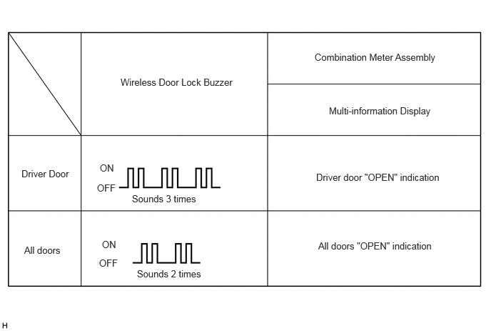

| Last Modified: 12-09-2025 | 6.11:8.1.0 | Doc ID: RM100000002KBI7 |
| Model Year Start: 2024 | Model: Tacoma | Prod Date Range: [03/2024 - ] |
| Title: THEFT DETERRENT / KEYLESS ENTRY: SMART KEY SYSTEM (for Entry Function): CUSTOMIZE PARAMETERS; 2024 - 2026 MY Tacoma Tacoma HV [03/2024 - ] | ||
CUSTOMIZE PARAMETERS
CUSTOMIZE WIRELESS DOOR LOCK CONTROL SYSTEM
Click here
![2024 - 2026 MY Tacoma Tacoma HV [12/2023 - ]; DOOR LOCK: WIRELESS DOOR LOCK CONTROL SYSTEM: CUSTOMIZE PARAMETERS](../../../../stylegraphics/info.gif)
CUSTOMIZE SMART KEY SYSTEM (for Entry Function)
NOTICE:
- When the customer requests a change in a function, first make sure that the function can be customized.
- Record the current settings before customizing.
HINT:
The following items can be customized.
(a) Customizing with the GTS
(1) Select the setting by referring to the table below.
Smart Key / Access
|
Tester Display |
Description |
Default |
Setting |
ECU |
|---|---|---|---|---|
|
*1: for Gasoline Model
*2: except Gasoline Model *3: When the following conditions are met, a short touch unlocks only the driver door, while a long touch unlocks all of doors. - "Door Unlock Sensor Touch Time Adjust" is set to other than "OFF" - "Entry Unlock Twice Function" is set to "Enable"*4 *4: Customize settings cannot be selected from "Smart Key / Access" if the vehicle recognizes driver 1, 2 or 3 with the My Settings function. In that case, change the settings from "My Settings".
Click here
|
||||
|
Auto Entry Cancel Setting |
Function that enables or disables the smart key system. |
OFF |
OFF or ON |
Certification ECU (smart key ECU assembly) |
|
Auto Entry Cancel 2 Setting |
Function that only prevents unlocking of the doors. |
OFF |
OFF or ON |
Certification ECU (smart key ECU assembly) |
|
Ignition Available Area Setting (Back Door Type) |
Function that sets the area that the electrical key transmitter sub-assembly must be in before the engine switch*1 or power switch*2 can be operated. |
Fr+Rr |
Fr+Rr or Fr+Rr+BD |
Certification ECU (smart key ECU assembly) |
|
Park Wait Time Adjust |
Function that sets the period of time (lock confirmation time) that the door is prevented from being unlocked by operating the front door outside handle assembly after an entry lock operation is performed. |
2.5s |
0.5sec, 1.5sec, 2.5sec or 5sec |
Certification ECU (smart key ECU assembly) |
|
Door Unlock Sensor Touch Time Adjust |
Function that sets the length of time the unlock sensor on the door outside handle assembly (for driver door) must be touched to unlock all of the doors.*3 |
Middle |
OFF, Short, Middle or Long |
Certification ECU (Smart key ECU assembly) |
|
Key Low Battery Warning Function |
Enables or disables the sounding of the buzzer when the transmitter battery is low and the ignition switch is turned off after being ON for 20 minutes or more. |
ON |
OFF or ON |
Certification ECU (Smart key ECU assembly) |
|
Key Left in Vehicle Alarm Function |
Enables or disables the sounding of the buzzer when entry lock is performed with the electrical key transmitter sub-assembly inside the vehicle. |
ON |
OFF or ON |
Certification ECU (Smart key ECU assembly) |
|
Forget to Turn IG OFF Alarm Function |
Enables or disables lock sensor warning function when shift position is in P with ignition switch ON (If this value is "ON", a warning will activate when the lock sensor is touched). |
ON |
OFF or ON |
Certification ECU (Smart key ECU assembly) |
|
Start Indicator Function |
Function that turns the entry warning light on the combination meter assembly on or off. |
ON |
OFF or ON |
Certification ECU (Smart key ECU assembly) |
|
Touch Activation Over Threshold |
Function that limits the number of times the entry lock function can be operated consecutively. When set to "Not Active" entry lock function can be operated an unlimited number of times consecutively. |
Active |
Active or Not Active |
Certification ECU (Smart key ECU assembly) |
|
Start Switch Light Function |
Function that sets whether the engine switch*1 or power switch*2 light blinks. |
ON |
OFF or ON |
Certification ECU (Smart key ECU assembly) |
|
Entry Unlock Twice Function |
Function that unlocks only the driver door when performing the entry unlock operation.*4 |
Disable |
Disable or Enable |
Main body ECU (multiplex network body ECU) |
CUSTOMIZING WITH THE MULTI-DISPLAY
(a) Customizing with the multi-display
(1) Select the setting by referring to the table below.
|
Display |
Description |
Default |
Setting |
Relevant ECU |
|---|---|---|---|---|
|
Unlock |
Function that sets which doors are unlocked by the entry unlock function. |
Driver's Door |
All Doors or Driver's Door |
Certification ECU (Smart key ECU assembly) |
|
Feedback lights |
Function that flashes the hazard warning lights once when the doors are locked by entry operation and twice when the doors are unlocked by entry operation. |
On |
On or Off |
Main body ECU (Multiplex network body ECU) |
|
Feedback tone |
Function that adjusts the wireless door lock buzzer volume |
5 |
Off, 1, 2, 3, 4, 5, 6 or 7 |
Main body ECU (Multiplex network body ECU) |
|
ACC customize |
Function that shift to ACC power source mode |
OFF* |
ON or OFF |
Certification ECU (Smart key ECU assembly) |
NOTICE:
*: Before performing an inspection, Customize Setting item ACC customize is set to ON.
HINT:
*: To facilitate transportation of the vehicle, the default setting of the certification ECU (smart key ECU assembly) is "ON". However, as the recommended setting is "OFF", the setting is changed to "OFF" at the dealer when the vehicle is delivered.
ENTRY UNLOCK MODE CHANGE FUNCTION
(a) Entry unlock mode change function (manual operation)
(1) The following entry unlock modes can be selected when using the entry unlock mode change function.
- All door unlock mode: When the unlock sensor of a front door outside handle assembly is touched, all of the doors are unlocked simultaneously.
- Driver door unlock mode: When the unlock sensor of the front door outside handle assembly LH is touched, only the driver door is unlocked. If any other door outside handle assembly is touched, all of the doors are unlocked simultaneously.
(2) When customizing through manual operation:
- Turn the ignition switch off.
- Check that the LED of the electrical key transmitter sub-assembly is not illuminated, and then press and hold the lock and unlock switches of the electrical key transmitter sub-assembly for 5 seconds or more while the electrical key transmitter sub-assembly is in the exterior detection area.
-
Check the current setting.
HINT:
- The mode changes from all door unlock mode to driver door unlock mode and then back to all door unlock mode.
-
The answer-back (wireless buzzer) operation for each mode is indicated in the table below.
Currently Selected Mode
Answer-back (Wireless Buzzer)
All door unlock mode
Buzzer sounds twice (short beeps)
Driver door unlock mode
Buzzer sounds 3 times (short beeps)
- Release the lock and unlock switches of the electrical key transmitter sub-assembly.
-
Check that the LED of the electrical key transmitter sub-assembly is not illuminated, and then press and hold the lock and unlock switches of the electrical key transmitter sub-assembly for 5 seconds or more to change the mode.
HINT:
Repeat the procedure as necessary to select the desired mode.
- Unlock the doors using the wireless function, and then open any door. 
ENTRY CANCEL FUNCTION
(a) Entry cancel function (manual operation)
HINT:
While the smart key system is canceled, it is possible to lock and unlock the doors with the wireless function, and the engine*1 or hybrid control system*2 can be started by holding the electrical key transmitter sub-assembly near the engine switch*1 or power switch*2.
- *1: for Gasoline Model
- *2: except Gasoline Model
(1) The following functions are disabled when the smart key system is canceled.
- Entry unlock/lock functions
- Push-button start function
- Key lock-in prevention function
- Entry warning functions
(2) When canceling the smart key system through manual operation:
-
Make sure the following conditions are met:
- The ignition switch is off.
- The driver door is closed.
- The driver door is unlocked.
(3) Press the unlock switch of the electrical key transmitter sub-assembly.
(4) Open the driver door within 5 seconds of completing the step above (driver door: closed → opened).
(5) With the driver door open, press the unlock switch of the electrical key transmitter sub-assembly 2 times within 5 seconds of completing the step above.
NOTICE:
If the driver door is closed before or while pressing the unlock switch, the entry cancel setting mode will end.
(6) Perform the following procedure within 30 seconds of completing the step above.
- Close and open the driver door twice (driver door: open → closed → opened → closed → opened).
-
With the driver door open, press the unlock switch of the electrical key transmitter sub-assembly 2 times.
NOTICE:
If the driver door is closed before or while pressing the unlock switch, the entry cancel setting mode will end.
- Close and open the driver door (driver door: open → closed → opened).
(7) Close the driver door within 5 seconds (driver door: open → closed).
(8) Check that the wireless buzzer sounds twice (short beeps) to confirm that the smart key system has been canceled.
(9) Perform the following procedure to restore the smart key system to the active state from the canceled state.
- Perform the procedure to cancel the smart key system again.
-
Check that the wireless buzzer sounds once (short beep) to confirm that the smart key system has been restored to the active state.
HINT:
- The system changes between the canceled state and the active state each time the procedure to cancel the system through manual operation is performed.
- The buzzer sounds twice when the system changes from the active state to the canceled state, and sounds once when the system changes from the canceled state to the active state.
|
|
|